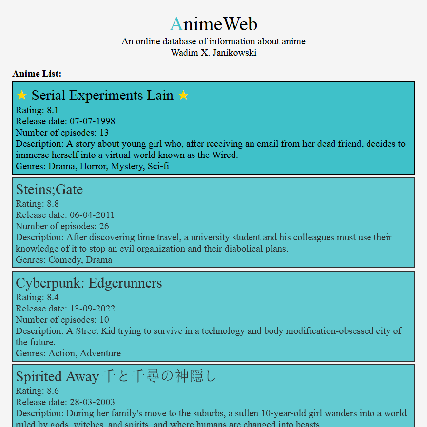
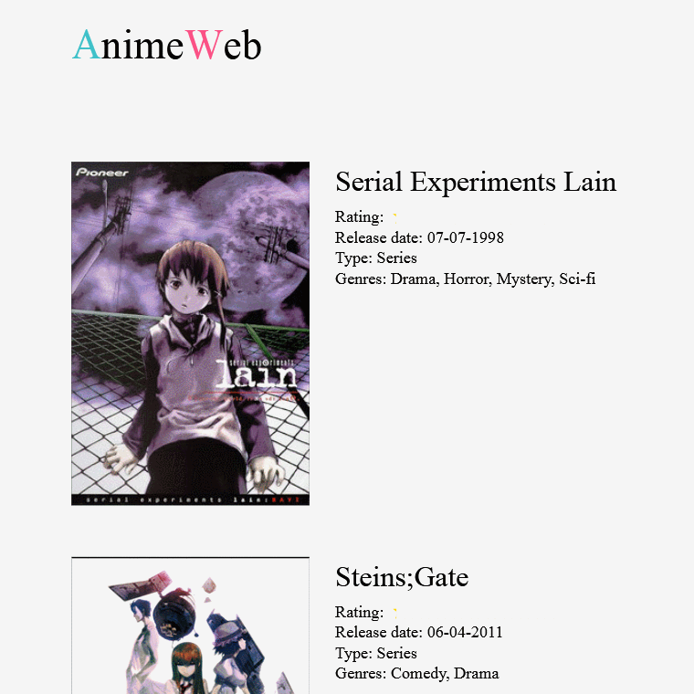
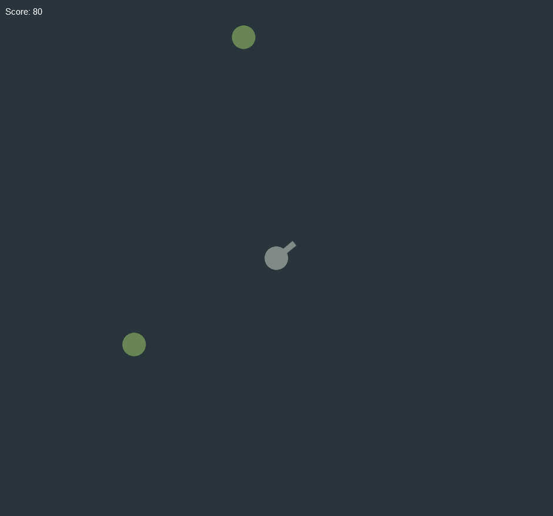
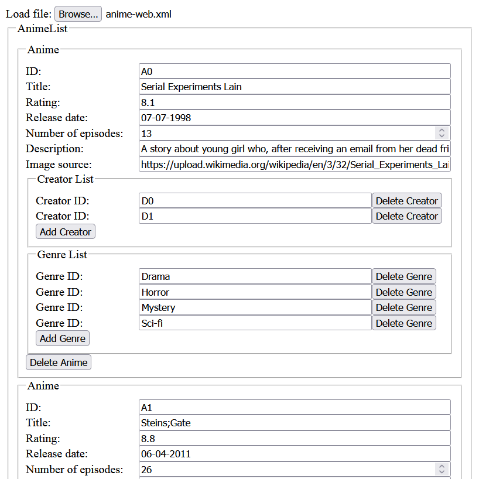

Assignment 1 (AnimeWeb)
The task was to create a well-formed XML file. We could choose the topic by ourselves. I like anime, so I
figured out that I am going to create something like an online database of information about anime. There are
<anime> and <director> elements that were later (in the 2nd assignment)
linked together using key references. It turns out that anime series tend to have multiple directors.
Assignment 2 (AnimeWeb)
The task was to apply styles to the XML file created in the previous assignment using CSS and to create DTD or XML Schema for our document. I chose XML Schema because it was worth more points than DTD.
The files that were created/modified in this assignment are listed below:Assignment 3 (AnimeWeb)
The task was to create four transformations of the original XML document to the following formats: TXT, XHTML, XML, and SVG.
The files that were created/generated in this assignment are listed below:- txt-output.txt
- txt-transform.xslt
- xhtml-output.xhtml
- xhtml-transform.xslt
- xml-output.xml
- xml-transform.xslt
- svg-output.svg
- svg-transform.xslt
{kind=link}
Assignment 4 (PifuPafu)
The task was to create a simple web-page game using SVG and JavaScript. The genre could be any. I decided to create a shooter because I once told someone I would. By the way, those green circles are assumed to be zombies.
The files that were created in this assignment are the following:{kind=link}
Assignment 5 (XMLEditor)
The task was to create a web-page editor to edit XML files that are valid against the XML Schema created in the 2nd assignment. I started working on it the evening before the deadline. Somehow, after a sleepless night, I managed to finish it on time.